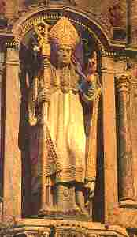

|
1.An aotrou Ronan benniget
Enez Iverni oa ganet, Bro-Saoz, en tu all d'ar mor glas, Demeus a benntieien vras. 2.Ur wech ma oa en e bedenn, En doa gwelet ur sklerijenn Hag un ael kaer gwisket e gwenn A gomzas outañ evel-hen: 3.- Ronan, Ronan, kerzh alese ; Gourc'hemennet eo gant Doue, Evit saveteiñ da ene, Mont da chom e douar Kernev.- 4.Ronan ouzh an ael a sentas, Ha da chom e Breizh e teuas, Kent e traoñ Leon, ha goude, E Koat Nevet, e bro Kernev. 5.Daou pe dri bloaz oa pe ouzhpenn, M'oa eno ober pinijenn, Pa oa ur pardaez toull e zor, War e zaoulin, dirak ar mor 6.Ken a lammas ur bleiz er c'hoad, A-dreuz en e veg un dañvad; Ha war e lerc'h un den, timat, Hag a ouele, gant kalonad 7.Ha Ronan gant truez outañ, A bedas Doue evitañ - Aotrou Doue, ha me ho ped ; Grit na vo an dañvad taget !- 8.Ne oa ket e bedenn lâret, Pa oa an dañvad digaset, Heb droug ebet, war dreuz an nor, Dirak Ronan hag an oac'h paour 9.Ac'hano da zont an den kaezh, Deue d'e welet alies Gant plijadur bras e teue Evit klevet komzoù Doue. 10.Hogen ur c'hreg a oa gantañ, Hag hi gwallbezh, anvet Keban, Hag hi a zeuas d'argarzhiñ Ronan en abeg d'he hini. |
11.Un deiz a oa bet d'e
gaouet
Ha trouz de'añ he devoa graet : - Chalmet hoc'h eus tud ma zi-me, Ma gwaz koulz ha ma bugale. 12.Ne reont met ho tarempred holl, Ha ma danvez a ya da goll. Ma na sentet ouzhin muioc'h, Kaer po chilpat, me rey ganeoc'h !- 13.En he fenn e lakaas neuze, Da c'hwanañ den santel Doue. Hag hi mont da gaout ar Roue, Gradlon, en tu-all d'ar menez : 14.- Aotrou Roue, ha me ho ped ; Ma flac'hig-me zo bet taget Ronan Koad Neved deus her graet O vont da vleiz 'm eus hen gwelet.- 14.Evel ma oa bet tamallet Ronan da Gemper oa kaset, Ha taolet e-barzh ur c'hav don A-berzh aotrou roue Gradlon. 16.'Maez ac'hane, pa oa tennet, Dioc'h ur wezenn e oe staget, Ha daou gi gouez ha diboellet Warnezhañ timat oa losket. 17.Hag eñ heb man na kaout aon, A reas ur groaz war e galon; Ken a dec'has ar chas raktal Evel dioc'h an tan, oc'h harzal. 18.Gradlon pa welaz kement-se, A lavaras d'an den Doue: - Na petra vat a rin-me deoc'h P'emañ Doue en tu ganeoc'h? 19.- Netra vat me na c'houlennan, Nemet truez d'ar c'hreg Keban; He bugelig n'eo ket marv, Ganti en arc'h oe klozet bev.- 20.An arc'h a oa bet digaset, Ar bugel enni oe kavet, Hag eñ war e gostez marv Ha sant Ronan e lakaas bev. |
21.An aotrou Gradlon hag e dud,
Souezhet-bras gant ar burzhud, 'N em strinkas dirak sant Ronan, O c'houlenn trugarez outañ. 22.Hag en er maez, d'ar c'hoad en-dro, Da chom di beteg e varv Eno oc'h ober pinijenn Ur maen kalet dindan e benn; 23.Gantañ krogen un ounner vrizh, Ur skoultrig gweet da c'houriz, Ha da evañ dour ar poull du Ha bara poazhet el ludu. 24.Pa zeuas e dremen dive'añ, A eas kuit deus ar bed-mañ, Daou ejen gouez kann dioc'h ar c'harr Tri eskob d'e gas d'an douar. 25.Hag i degouezet gant ar stêr, Ha kaout Keban diskabell-kaer, Oc'h ober lizoù d'ar gwener, Daoust da wad Jezuz, hor Salver ; 26.Hag hi sevel he golvazh prenn, Ha darc'hañ gant korn un ejen Ken a zilammas gwall-spontet, E gorn gant an taol diframmet. 27.-Kae,mab-gagn, kae d'az toull en-dro Kae da vreinañ gant chas marv ! Ne vi ket kavet bremañ mui Oc'h ober goab ac'hanomp-ni.- 28.N'oa ket he genou peurserret, Pa oa gant an douar lonket E-touez moged ha flammoù-tan, E lec'h ma c'helver Bez-Keban. 29.Mont a eure atav ar c'harr, O kas sant Ronan d'an douar ; Pa chomas sonn an daou ejen Hep kerzhet mui na raok na dreñv. 30.Eno e oe lakaet ar sant, Evel ma kreder oa e c'hoant ; E penn-an-nec'h eus ar c'hoad glas, Eeun-hag-eeunn dirak ar mor bras |